- 00 学好 Netty，是你修炼 Java 内功的必经之路.md.html
- 01 初识 Netty：为什么 Netty 这么流行？.md.html
- 02 纵览全局：把握 Netty 整体架构脉络.md.html
- 03 引导器作用：客户端和服务端启动都要做些什么？.md.html
- 04 事件调度层：为什么 EventLoop 是 Netty 的精髓？.md.html
- 05 服务编排层：Pipeline 如何协调各类 Handler ？.md.html
- 06 粘包拆包问题：如何获取一个完整的网络包？.md.html
- 07 接头暗语：如何利用 Netty 实现自定义协议通信？.md.html
- 08 开箱即用：Netty 支持哪些常用的解码器？.md.html
- 09 数据传输：writeAndFlush 处理流程剖析.md.html
- 10 双刃剑：合理管理 Netty 堆外内存.md.html
- 11 另起炉灶：Netty 数据传输载体 ByteBuf 详解.md.html
- 12 他山之石：高性能内存分配器 jemalloc 基本原理.md.html
- 13 举一反三：Netty 高性能内存管理设计（上）.md.html
- 14 举一反三：Netty 高性能内存管理设计（下）.md.html
- 15 轻量级对象回收站：Recycler 对象池技术解析.md.html
- 16 IO 加速：与众不同的 Netty 零拷贝技术.md.html
- 17 源码篇：从 Linux 出发深入剖析服务端启动流程.md.html
- 18 源码篇：解密 Netty Reactor 线程模型.md.html
- 19 源码篇：一个网络请求在 Netty 中的旅程.md.html
- 20 技巧篇：Netty 的 FastThreadLocal 究竟比 ThreadLocal 快在哪儿？.md.html
- 21 技巧篇：延迟任务处理神器之时间轮 HashedWheelTimer.md.html
- 22 技巧篇：高性能无锁队列 Mpsc Queue.md.html
- 23 架构设计：如何实现一个高性能分布式 RPC 框架.md.html
- 24 服务发布与订阅：搭建生产者和消费者的基础框架.md.html
- 25 远程通信：通信协议设计以及编解码的实现.md.html
- 26 服务治理：服务发现与负载均衡机制的实现.md.html
- 27 动态代理：为用户屏蔽 RPC 调用的底层细节.md.html
- 28 实战总结：RPC 实战总结与进阶延伸.md.html
- 29 编程思想：Netty 中应用了哪些设计模式？.md.html
- 30 实践总结：Netty 在项目开发中的一些最佳实践.md.html
- 31 结束语 技术成长之路：如何打造自己的技术体系.md.html
02 纵览全局：把握 Netty 整体架构脉络
上次课程中我介绍了 Netty 的功能特性和优势，从今天开始我们正式进入 Netty 技术原理的学习。
学习任何一门技术都需要有全局观，在开始上手的时候，不宜陷入琐碎的技术细节，避免走进死胡同。这节课我们以 Netty 整体架构设计为切入点，来带你明确学习目标，建立起 Netty 的学习主线，这条主线将贯穿我们整个的学习过程。
本节课以 Netty 4.1.42 为基准版本，我将分别从 Netty 整体结构、逻辑架构、源码结构三个方面对其进行介绍。
Netty 整体结构
Netty 是一个设计非常用心的网络基础组件，Netty 官网给出了有关 Netty 的整体功能模块结构，却没有其他更多的解释。从图中，我们可以清晰地看出 Netty 结构一共分为三个模块：
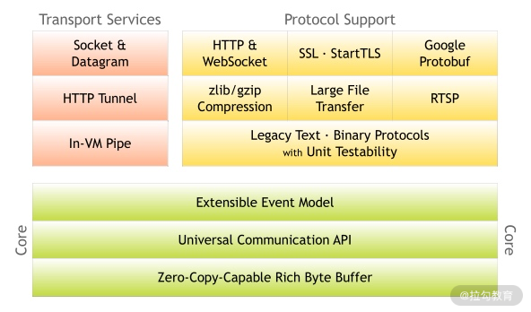
1. Core 核心层
Core 核心层是 Netty 最精华的内容，它提供了底层网络通信的通用抽象和实现，包括可扩展的事件模型、通用的通信 API、支持零拷贝的 ByteBuf 等。
2. Protocol Support 协议支持层
协议支持层基本上覆盖了主流协议的编解码实现，如 HTTP、SSL、Protobuf、压缩、大文件传输、WebSocket、文本、二进制等主流协议，此外 Netty 还支持自定义应用层协议。Netty 丰富的协议支持降低了用户的开发成本，基于 Netty 我们可以快速开发 HTTP、WebSocket 等服务。
3. Transport Service 传输服务层
传输服务层提供了网络传输能力的定义和实现方法。它支持 Socket、HTTP 隧道、虚拟机管道等传输方式。Netty 对 TCP、UDP 等数据传输做了抽象和封装，用户可以更聚焦在业务逻辑实现上，而不必关系底层数据传输的细节。
Netty 的模块设计具备较高的通用性和可扩展性，它不仅是一个优秀的网络框架，还可以作为网络编程的工具箱。Netty 的设计理念非常优雅，值得我们学习借鉴。
现在，我们对 Netty 的整体结构已经有了一个大概的印象，下面我们一起看下 Netty 的逻辑架构，学习下 Netty 是如何做功能分解的。
Netty 逻辑架构
下图是 Netty 的逻辑处理架构。Netty 的逻辑处理架构为典型网络分层架构设计，共分为网络通信层、事件调度层、服务编排层，每一层各司其职。图中包含了 Netty 每一层所用到的核心组件。我将为你介绍 Netty 的每个逻辑分层中的各个核心组件以及组件之间是如何协调运作的。
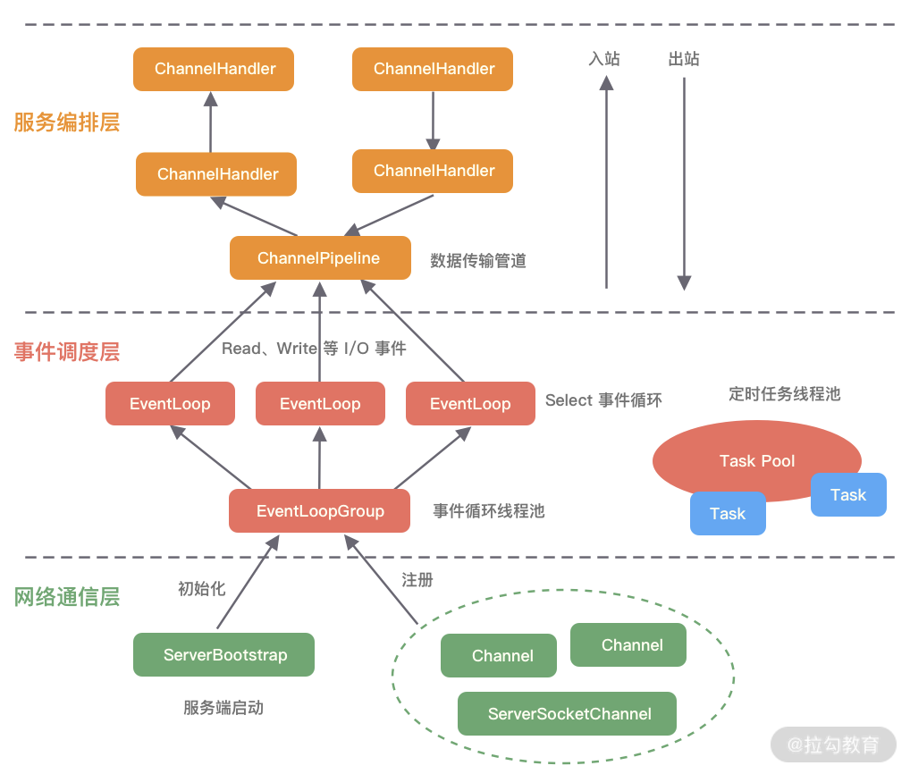
网络通信层
网络通信层的职责是执行网络 I/O 的操作。它支持多种网络协议和 I/O 模型的连接操作。当网络数据读取到内核缓冲区后，会触发各种网络事件，这些网络事件会分发给事件调度层进行处理。
网络通信层的核心组件包含BootStrap、ServerBootStrap、Channel三个组件。
- BootStrap & ServerBootStrap
Bootstrap 是“引导”的意思，它主要负责整个 Netty 程序的启动、初始化、服务器连接等过程，它相当于一条主线，串联了 Netty 的其他核心组件。
如下图所示，Netty 中的引导器共分为两种类型：一个为用于客户端引导的 Bootstrap，另一个为用于服务端引导的 ServerBootStrap，它们都继承自抽象类 AbstractBootstrap。
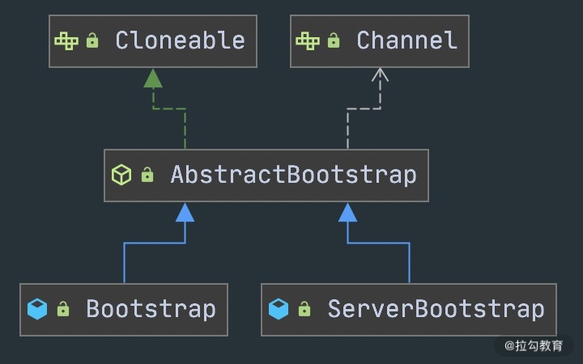
Bootstrap 和 ServerBootStrap 十分相似，两者非常重要的区别在于 Bootstrap 可用于连接远端服务器，只绑定一个 EventLoopGroup。而 ServerBootStrap 则用于服务端启动绑定本地端口，会绑定两个 EventLoopGroup，这两个 EventLoopGroup 通常称为 Boss 和 Worker。
ServerBootStrap 中的 Boss 和 Worker 是什么角色呢？它们之间又是什么关系？这里的 Boss 和 Worker 可以理解为“老板”和“员工”的关系。每个服务器中都会有一个 Boss，也会有一群做事情的 Worker。Boss 会不停地接收新的连接，然后将连接分配给一个个 Worker 处理连接。
有了 Bootstrap 组件，我们可以更加方便地配置和启动 Netty 应用程序，它是整个 Netty 的入口，串接了 Netty 所有核心组件的初始化工作。
- Channel
Channel 的字面意思是“通道”，它是网络通信的载体。Channel提供了基本的 API 用于网络 I/O 操作，如 register、bind、connect、read、write、flush 等。Netty 自己实现的 Channel 是以 JDK NIO Channel 为基础的，相比较于 JDK NIO，Netty 的 Channel 提供了更高层次的抽象，同时屏蔽了底层 Socket 的复杂性，赋予了 Channel 更加强大的功能，你在使用 Netty 时基本不需要再与 Java Socket 类直接打交道。
下图是 Channel 家族的图谱。AbstractChannel 是整个家族的基类，派生出 AbstractNioChannel、AbstractOioChannel、AbstractEpollChannel 等子类，每一种都代表了不同的 I/O 模型和协议类型。常用的 Channel 实现类有：
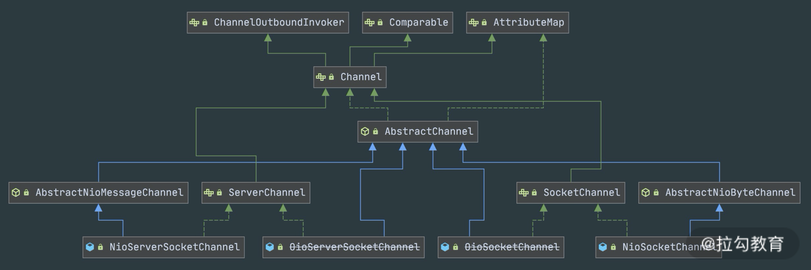
- NioServerSocketChannel 异步 TCP 服务端。
- NioSocketChannel 异步 TCP 客户端。
- OioServerSocketChannel 同步 TCP 服务端。
- OioSocketChannel 同步 TCP 客户端。
- NioDatagramChannel 异步 UDP 连接。
- OioDatagramChannel 同步 UDP 连接。
当然 Channel 会有多种状态，如连接建立、连接注册、数据读写、连接销毁等。随着状态的变化，Channel 处于不同的生命周期，每一种状态都会绑定相应的事件回调，下面的表格我列举了 Channel 最常见的状态所对应的事件回调。
| 事件 | 说明 |
|---|---|
| channelRegistered | Channel 创建后被注册到 EventLoop 上 |
| channelUnregistered | Channel 创建后未注册或者从 EventLoop 取消注册 |
| channelActive | Channel 处于就绪状态，可以被读写 |
| channelInactive | Channel 处于非就绪状态 |
| channelRead | Channel 可以从远端读取到数据 |
| channelReadComplete | Channel 读取数据完成 |
有关网络通信层我就先介绍到这里，简单地总结一下。BootStrap 和 ServerBootStrap 分别负责客户端和服务端的启动，它们是非常强大的辅助工具类；Channel 是网络通信的载体，提供了与底层 Socket 交互的能力。那么 Channel 生命周期内的事件都是如何被处理的呢？那就是 Netty 事件调度层的工作职责了。
事件调度层
事件调度层的职责是通过 Reactor 线程模型对各类事件进行聚合处理，通过 Selector 主循环线程集成多种事件（ I/O 事件、信号事件、定时事件等），实际的业务处理逻辑是交由服务编排层中相关的 Handler 完成。
事件调度层的核心组件包括 EventLoopGroup、EventLoop。
- EventLoopGroup & EventLoop
EventLoopGroup 本质是一个线程池，主要负责接收 I/O 请求，并分配线程执行处理请求。在下图中，我为你讲述了 EventLoopGroups、EventLoop 与 Channel 的关系。
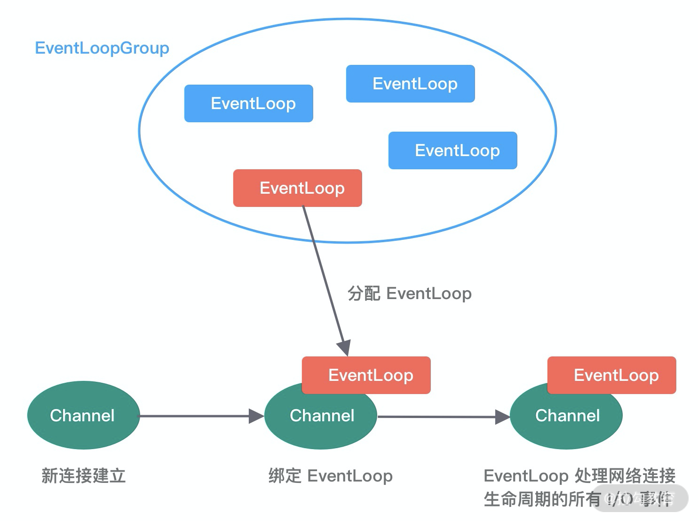
从上图中，我们可以总结出 EventLoopGroup、EventLoop、Channel 的几点关系。
- 一个 EventLoopGroup 往往包含一个或者多个 EventLoop。EventLoop 用于处理 Channel 生命周期内的所有 I/O 事件，如 accept、connect、read、write 等 I/O 事件。
- EventLoop 同一时间会与一个线程绑定，每个 EventLoop 负责处理多个 Channel。
- 每新建一个 Channel，EventLoopGroup 会选择一个 EventLoop 与其绑定。该 Channel 在生命周期内都可以对 EventLoop 进行多次绑定和解绑。
下图是 EventLoopGroup 的家族图谱。可以看出 Netty 提供了 EventLoopGroup 的多种实现，而且 EventLoop 则是 EventLoopGroup 的子接口，所以也可以把 EventLoop 理解为 EventLoopGroup，但是它只包含一个 EventLoop 。
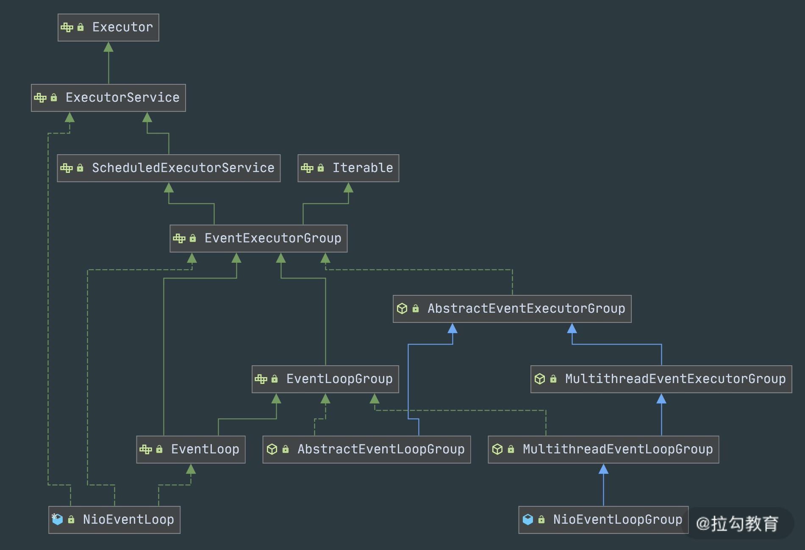
EventLoopGroup 的实现类是 NioEventLoopGroup，NioEventLoopGroup 也是 Netty 中最被推荐使用的线程模型。NioEventLoopGroup 继承于 MultithreadEventLoopGroup，是基于 NIO 模型开发的，可以把 NioEventLoopGroup 理解为一个线程池，每个线程负责处理多个 Channel，而同一个 Channel 只会对应一个线程。
EventLoopGroup 是 Netty 的核心处理引擎，那么 EventLoopGroup 和之前课程所提到的 Reactor 线程模型到底是什么关系呢？其实 EventLoopGroup 是 Netty Reactor 线程模型的具体实现方式，Netty 通过创建不同的 EventLoopGroup 参数配置，就可以支持 Reactor 的三种线程模型：
- 单线程模型：EventLoopGroup 只包含一个 EventLoop，Boss 和 Worker 使用同一个EventLoopGroup；
- 多线程模型：EventLoopGroup 包含多个 EventLoop，Boss 和 Worker 使用同一个EventLoopGroup；
- 主从多线程模型：EventLoopGroup 包含多个 EventLoop，Boss 是主 Reactor，Worker 是从 Reactor，它们分别使用不同的 EventLoopGroup，主 Reactor 负责新的网络连接 Channel 创建，然后把 Channel 注册到从 Reactor。
在介绍完事件调度层之后，可以说 Netty 的发动机已经转起来了，事件调度层负责监听网络连接和读写操作，然后触发各种类型的网络事件，需要一种机制管理这些错综复杂的事件，并有序地执行，接下来我们便一起学习 Netty 服务编排层中核心组件的职责。
服务编排层
服务编排层的职责是负责组装各类服务，它是 Netty 的核心处理链，用以实现网络事件的动态编排和有序传播。
服务编排层的核心组件包括 ChannelPipeline、ChannelHandler、ChannelHandlerContext。
- ChannelPipeline
ChannelPipeline 是 Netty 的核心编排组件，负责组装各种 ChannelHandler，实际数据的编解码以及加工处理操作都是由 ChannelHandler 完成的。ChannelPipeline 可以理解为ChannelHandler 的实例列表——内部通过双向链表将不同的 ChannelHandler 链接在一起。当 I/O 读写事件触发时，ChannelPipeline 会依次调用 ChannelHandler 列表对 Channel 的数据进行拦截和处理。
ChannelPipeline 是线程安全的，因为每一个新的 Channel 都会对应绑定一个新的 ChannelPipeline。一个 ChannelPipeline 关联一个 EventLoop，一个 EventLoop 仅会绑定一个线程。
ChannelPipeline、ChannelHandler 都是高度可定制的组件。开发者可以通过这两个核心组件掌握对 Channel 数据操作的控制权。下面我们看一下 ChannelPipeline 的结构图：
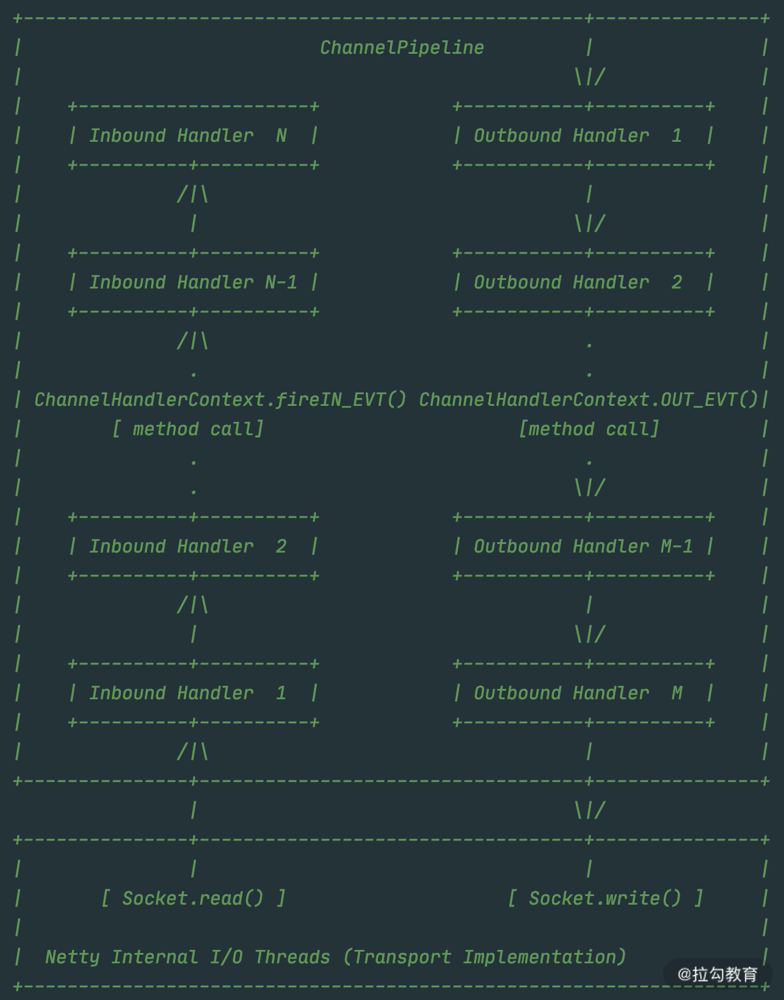
从上图可以看出，ChannelPipeline 中包含入站 ChannelInboundHandler 和出站 ChannelOutboundHandler 两种处理器，我们结合客户端和服务端的数据收发流程来理解 Netty 的这两个概念。
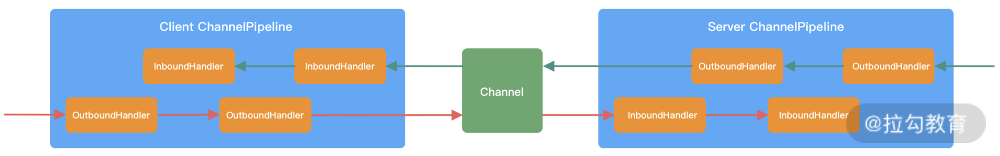
客户端和服务端都有各自的 ChannelPipeline。以客户端为例，数据从客户端发向服务端，该过程称为出站，反之则称为入站。数据入站会由一系列 InBoundHandler 处理，然后再以相反方向的 OutBoundHandler 处理后完成出站。我们经常使用的编码 Encoder 是出站操作，解码 Decoder 是入站操作。服务端接收到客户端数据后，需要先经过 Decoder 入站处理后，再通过 Encoder 出站通知客户端。所以客户端和服务端一次完整的请求应答过程可以分为三个步骤：客户端出站（请求数据）、服务端入站（解析数据并执行业务逻辑）、服务端出站（响应结果）。
- ChannelHandler & ChannelHandlerContext
在介绍 ChannelPipeline 的过程中，想必你已经对 ChannelHandler 有了基本的概念，数据的编解码工作以及其他转换工作实际都是通过 ChannelHandler 处理的。站在开发者的角度，最需要关注的就是 ChannelHandler，我们很少会直接操作 Channel，都是通过 ChannelHandler 间接完成。
下图描述了 Channel 与 ChannelPipeline 的关系，从图中可以看出，每创建一个 Channel 都会绑定一个新的 ChannelPipeline，ChannelPipeline 中每加入一个 ChannelHandler 都会绑定一个 ChannelHandlerContext。由此可见，ChannelPipeline、ChannelHandlerContext、ChannelHandler 三个组件的关系是密切相关的，那么你一定会有疑问，每个 ChannelHandler 绑定ChannelHandlerContext 的作用是什么呢？
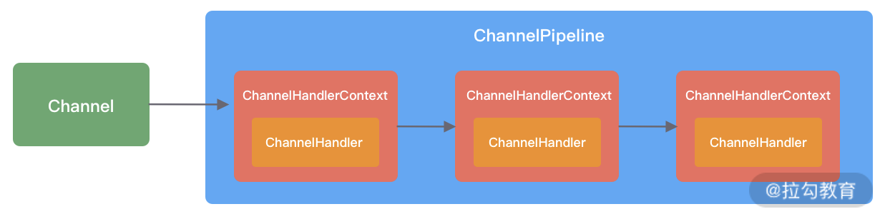
ChannelHandlerContext 用于保存 ChannelHandler 上下文，通过 ChannelHandlerContext 我们可以知道 ChannelPipeline 和 ChannelHandler 的关联关系。ChannelHandlerContext 可以实现 ChannelHandler 之间的交互，ChannelHandlerContext 包含了 ChannelHandler 生命周期的所有事件，如 connect、bind、read、flush、write、close 等。此外，你可以试想这样一个场景，如果每个 ChannelHandler 都有一些通用的逻辑需要实现，没有 ChannelHandlerContext 这层模型抽象，你是不是需要写很多相同的代码呢？
以上便是 Netty 的逻辑处理架构，可以看出 Netty 的架构分层设计得非常合理，屏蔽了底层 NIO 以及框架层的实现细节，对于业务开发者来说，只需要关注业务逻辑的编排和实现即可。
组件关系梳理
当你了解每个 Netty 核心组件的概念后。你会好奇这些组件之间如何协作？结合客户端和服务端的交互流程，我画了一张图，为你完整地梳理一遍 Netty 内部逻辑的流转。
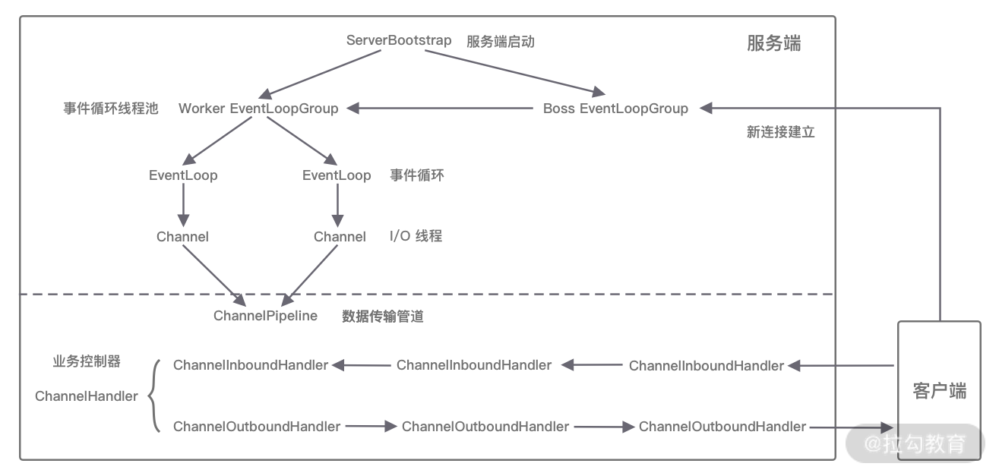
- 服务端启动初始化时有 Boss EventLoopGroup 和 Worker EventLoopGroup 两个组件，其中 Boss 负责监听网络连接事件。当有新的网络连接事件到达时，则将 Channel 注册到 Worker EventLoopGroup。
- Worker EventLoopGroup 会被分配一个 EventLoop 负责处理该 Channel 的读写事件。每个 EventLoop 都是单线程的，通过 Selector 进行事件循环。
- 当客户端发起 I/O 读写事件时，服务端 EventLoop 会进行数据的读取，然后通过 Pipeline 触发各种监听器进行数据的加工处理。
- 客户端数据会被传递到 ChannelPipeline 的第一个 ChannelInboundHandler 中，数据处理完成后，将加工完成的数据传递给下一个 ChannelInboundHandler。
- 当数据写回客户端时，会将处理结果在 ChannelPipeline 的 ChannelOutboundHandler 中传播，最后到达客户端。
以上便是 Netty 各个组件的整体交互流程，你只需要对每个组件的工作职责有所了解，心中可以串成一条流水线即可，具体每个组件的实现原理后续课程我们会深入介绍。
Netty 源码结构
Netty 源码分为多个模块，模块之间职责划分非常清楚。如同上文整体功能模块一样，Netty 源码模块的划分也是基本契合的。

我们不仅可以使用 Netty all-in-one 的 Jar 包，也可以单独使用其中某些工具包。下面我根据 Netty 的分层结构以及实际的业务场景具体介绍 Netty 中常用的工具包。
Core 核心层模块
netty-common模块是 Netty 的核心基础包，提供了丰富的工具类，其他模块都需要依赖它。在 common 模块中，常用的包括通用工具类和自定义并发包。
- 通用工具类：比如定时器工具 TimerTask、时间轮 HashedWheelTimer 等。
- 自定义并发包：比如异步模型****Future & Promise、相比 JDK 增强的 FastThreadLocal 等。
在netty-buffer 模块中Netty自己实现了的一个更加完备的ByteBuf 工具类，用于网络通信中的数据载体。由于人性化的 Buffer API 设计，它已经成为 Java ByteBuffer 的完美替代品。ByteBuf 的动态性设计不仅解决了 ByteBuffer 长度固定造成的内存浪费问题，而且更安全地更改了 Buffer 的容量。此外 Netty 针对 ByteBuf 做了很多优化，例如缓存池化、减少数据拷贝的 CompositeByteBuf 等。
netty-resover模块主要提供了一些有关基础设施的解析工具，包括 IP Address、Hostname、DNS 等。
Protocol Support 协议支持层模块
netty-codec模块主要负责编解码工作，通过编解码实现原始字节数据与业务实体对象之间的相互转化。如下图所示，Netty 支持了大多数业界主流协议的编解码器，如 HTTP、HTTP2、Redis、XML 等，为开发者节省了大量的精力。此外该模块提供了抽象的编解码类 ByteToMessageDecoder 和 MessageToByteEncoder，通过继承这两个类我们可以轻松实现自定义的编解码逻辑。
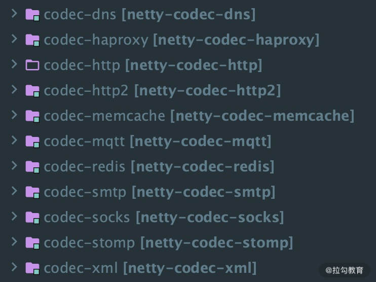
netty-handler模块主要负责数据处理工作。Netty 中关于数据处理的部分，本质上是一串有序 handler 的集合。netty-handler 模块提供了开箱即用的 ChannelHandler 实现类，例如日志、IP 过滤、流量整形等，如果你需要这些功能，仅需在 pipeline 中加入相应的 ChannelHandler 即可。
Transport Service 传输服务层模块
netty-transport 模块可以说是 Netty 提供数据处理和传输的核心模块。该模块提供了很多非常重要的接口，如 Bootstrap、Channel、ChannelHandler、EventLoop、EventLoopGroup、ChannelPipeline 等。其中 Bootstrap 负责客户端或服务端的启动工作，包括创建、初始化 Channel 等；EventLoop 负责向注册的 Channel 发起 I/O 读写操作；ChannelPipeline 负责 ChannelHandler 的有序编排，这些组件在介绍 Netty 逻辑架构的时候都有所涉及。
以上只介绍了 Netty 常用的功能模块，还有很多模块就不一一列举了，有兴趣的同学可以在 GitHub（https://github.com/netty/netty）查询 Netty 的源码。
总结
本节课我们分别从整体结构、逻辑架构以及源码结构对 Netty 的整体架构进行了初步介绍，可见 Netty 的分层架构设计非常合理，实现了各层之间的逻辑解耦，对于开发者来说，只需要扩展业务逻辑即可。
在我刚开始接触 Netty 时，面对太多的核心组件刚开始是无从下手的，所以在 Netty 的逻辑架构中我梳理了 Netty 中各个核心组件的关系，希望能够帮助你快速入门。从下节课开始我们会对 Netty 逻辑架构中的核心组件做详细的介绍。